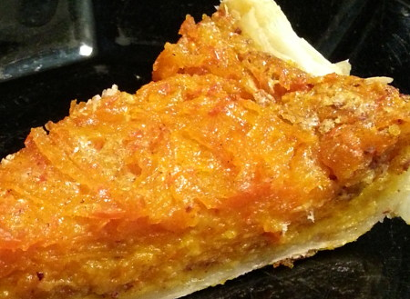

| Zutaten für 4 Personen: | |
| 425g | Kürbis |
| 2dl | Gesüsste Kondensmilch |
| 3 | Eier |
| 1 Tl | gemahlener Zimt |
| 1 Prise | Muskatnuss |
| 1/2 Tl | Salz |
| 50g | gemahlene Haselnüsse oder Mandel |
| 1 | ausgewallter Blätterteig oder Kuchenteig |
Blätterteig in 24cm Kuchenblech oder Wähenform legen. Einstechen.
Boden mit gemahlenen N&uüssen bedecken
Den Kürbis mit der Bircherraffel zerkleinern.
3 Eier mit gesüsster Kondensmilch (oder 2dl Milch und 100g Zucker) mit Gewürzen und Salz mischen.
Guss mit dem Kürbis mischen und auf dem Teigboden verteilen.
10 Minuten im vorgeheizent Ofen bei 220°C backen.
Hitze auf 180°C reduzieren und 35 Minuten weiterbacken
Wenn nötig 10 Minuten auf Unterhitze weiterbacken.
Ausgekühlt im Kühlschrank 3 Tage haltbar.
Alternative: Kürbis in Wasser weichkochen, Wasser abgiessen und pürieren. Nüsse weglassen (wird dann zum American Pumpkin Pie).
Statt Kondensmilch und Zucker 2dl gezuckerte Kondensmilch nehmen.
Sandra Keller vom Internet: allrecipes.com
Der Kuchen wurde zu süss. Nächstes mal 100g statt 200g Zucker nehmen. SK 14 Nov 2017
Nette süsse Kürbiswähe. RE 14 Nov 2017
Im Oktober 2021 erneut zubereitet. Gezuckerte Kondensmilch ist bei mir um die Ecke nicht erhältlich. Habe folglich das Rezept mit 2dl Milch und 100g Zucker zubereitet. Ist weiterhin vernehmlich süss aber ganz OK. Habe das Rezept entsprechend korrigiert.